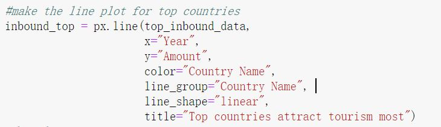
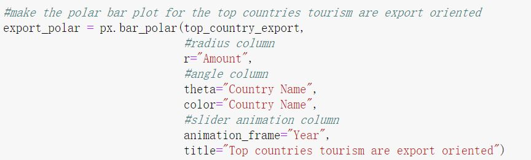

Tourism Data Analysis
Home
Inbound analysis
GDP
About
World inbound tourists distribution
show python code
The world map shows from 2007 to 2017, the major destinations that tourists choose do not change a lot. Europe, North America, and China are famous destinations during these ten years.
Top countries attract tourists
show python code

The line chart plot shows that the top 10 destinations that most of the tourists chose during these ten years; 6 of the 10 countries are in Europe. The most popular country is France. It is not surprising since its historical heritage and romantic stories are famous all over the world. People traveling to Spain and the US increase steadily, in 2017 Spain surpassed the US becoming the second best choice of destination.
Top attractive countries inbound tourists yearly growth rate
show python code
The grouped bar plot shows the yearly percentage growth of inbound tourists. It is evident that in 2008 and 2009 most country experienced negative growth. This is because of the global financial crisis during 2007 to 2009. And in 2016, Turkey's inbound tourist number had a significant drop, and this was due to the coup attempt. The growth of Mexico in 2014, was due to domestic policy uncertainty.
Top countries ranked by tourism share of exports
show python code

The polar bar chart shows the top countries that are tourism oriented. In other words, export depends mainly on the tourist industry. Most of them are small costal countries. And in recent years, their exports have been increasingly relying on tourism, all of their tourist receipts count over 67% of the export. The top three, China(Macao), Grenada and Maldives, are over 83%.